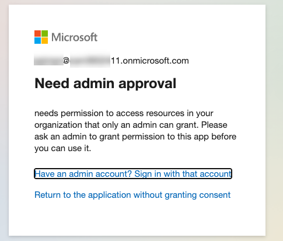

ラボ E6b - OAuth による Entra ID 認証の追加 (手動セットアップ)
このラボでは、Entra ID をアイデンティティ プロバイダーとして使用し、OAuth 2.0 を使って API プラグインに認証を追加します。
Microsoft 365 が AI モデルとオーケストレーションを提供する宣言型エージェントを構築したい場合は、これらのラボを実施してください。
- 🏁 はじめに
- 🔧 セットアップ
- 🧰 宣言型エージェントの基礎
- 🛠️ API をゼロから構築して統合する
- 🔐 認証
- 🔌 統合
Note
このラボでは Entra ID の詳細なセットアップ手順が多数含まれます。
これらの手順の多くを自動化する新しい Agents Toolkit が公開されています。近いうちに、より簡略化されたラボを提供する予定です。
このラボでは、プラグインと API を保護するために使用する Entra ID アプリケーションを登録します。作業を始める前に、アプリ情報を安全な場所に保存できるようにしてください。保存が必要な値は以下のとおりです。
API Base URL:
API service Application (client) ID:
API service Directory (tenant) ID:
Authorization endpoint:
Token endpoint:
API service client secret:
API scope:
Plugin service application (client) ID:
Plugin service client secret:
Exercise 1: 永続的な開発者トンネルのセットアップ (任意)
デフォルトでは、Agents Toolkit はプロジェクトを起動するたびに新しい開発者トンネルを作成します。そのためローカルで実行している API にアクセスする URL も毎回変わります。通常は Agents Toolkit が自動で URL を更新してくれるため問題ありませんが、本ラボでは手動設定を行うため、デバッガーを開始するたびに Entra ID と Teams Developer Portal の URL を手動で更新する必要があります。そこで、URL が変わらない永続的な開発者トンネルを設定することをおすすめします。
永続トンネルを設定したくない場合はこちら ▶▶▶
Agents Toolkit が提供する開発者トンネルを使用する場合は、この演習をスキップして構いません。プロジェクトが起動したら、ターミナル タブ 1️⃣ で "Start local tunnel" のターミナル 2️⃣ を選択し、Forwarding URL 3️⃣ をコピーしてください。この URL はプロジェクトを起動するたびに変わるため、アプリ登録のリダイレクト URL (Exercise 2 Step 1) と Teams Developer Portal の URL (Exercise 5 Step 1) を毎回手動で更新する必要があります。

Step 1: Developer Tunnel CLI のインストール
以下のコマンドで Developer Tunnel をインストールします。Developer Tunnel の完全な手順とダウンロード リンクはこちら です。
| OS | コマンド |
|---|---|
| Windows | winget install Microsoft.devtunnel |
| Mac OS | brew install --cask devtunnel |
| Linux | curl -sL https://aka.ms/DevTunnelCliInstall | bash |
Tip
パスが更新されるよう、コマンドラインを再起動する必要がある場合があります。
インストール後、ログインを行います。Microsoft 365 アカウントでログイン可能です。
devtunnel user login
このラボで作業中は devtunnel コマンドを実行したままにしてください。再起動が必要になった場合は、前と同じ devtunnel user login コマンドを再実行します。
Step 2: トンネルの作成とホスト
次に、Azure Functions のローカル ポート (7071) への永続トンネルを設定します。以下のコマンドを使用し、必要に応じて "mytunnel" を任意の名前に置き換えてください。
devtunnel create mytunnel -a --host-header unchanged
devtunnel port create mytunnel -p 7071
devtunnel host mytunnel
コマンドラインに接続情報が表示されます。

「Connect via browser」の URL をコピーし、「API Base URL」として保存してください。
Step 3: プロジェクトで動的トンネルを無効化
ローカルでプロジェクトが実行中の場合は停止します。.vscode\tasks.json を編集し、「Start Teams App」タスクを探します。"Start local tunnel" の依存関係をコメントアウトし、その代わりに "Start Azurite emulator" を依存関係として追加します。最終的なタスクは以下のようになります。
{
"label": "Start Teams App Locally",
"dependsOn": [
"Validate prerequisites",
//"Start local tunnel",
"Start Azurite emulator",
"Create resources",
"Build project",
"Start application"
],
"dependsOrder": "sequence"
},
Step 4: サーバー URL の手動上書き
env/.env.local を開き、OPENAPI_SERVER_URL の値を永続トンネルの URL に変更します。
Exercise 2: API 用の Entra ID アプリケーションの登録
Step 1: 新しい Entra ID アプリ登録の追加
Microsoft 365 Admin center または直接 https://entra.microsoft.com/ から Entra ID 管理センターにアクセスします。開発テナントにログインしていることを確認してください。
「Identity」1️⃣ → 「Applications」2️⃣ → 「App registrations」3️⃣ の順にクリックし、「+」4️⃣ で新しいアプリ登録を追加します。

アプリケーション名に「My API Service」などのわかりやすい名前を入力 1️⃣。「Supported account types」は「Accounts in this organizational directory only (Microsoft only - single tenant)」を選択 2️⃣。「Redirect URI (optional)」で「Web」を選択し、開発者トンネルの URL を入力 3️⃣。
永続トンネルを作成していない場合...
Agents Toolkit アプリを再起動するたびに、新しいトンネル URL をこの「Redirect URI」に設定し直す必要があります。
入力後、「Register」4️⃣ をクリックします。

Step 2: アプリ情報を安全な場所へコピー
「Overview」ページで Application ID (Client ID) 1️⃣ と Directory ID (Tenant ID) 2️⃣ をコピーして安全な場所に保存します。その後、Endpoints ボタン 3️⃣ をクリックしてエンドポイントのフライアウトを開きます。
「OAuth 2.0 authorization endpoint (v2)」1️⃣ と「OAuth 2.0 token endpoint (v2)」2️⃣ の 2 つの URL をコピーし、同じ場所に保存します。
Step 3: クライアント シークレットの作成
「Certificates & secrets」1️⃣ → 「+ New client secret」2️⃣ の順に移動します。シークレットに名前と有効期限を設定し、Add をクリックします。シークレットは作成時のみ表示されるため、表示されたら 3️⃣ でコピーして必ず保存してください。

Step 4: API Scope の公開
API 呼び出しを検証するには、API Scope を公開する必要があります。ここでは「access_as_user」というシンプルなスコープを設定します。
「Expose an API」1️⃣ へ移動し、「Application ID URI」の横にある「Add」2️⃣ をクリックします。右側のフライアウトでデフォルト値 (api://
「Add a scope」で Scope name に access_as_user を入力 1️⃣。残りのフィールドを以下のように入力します。
| 項目 | 値 |
|---|---|
| Who can consent? | Admins and users |
| Admin consent display name | Access My API as the user |
| Admin consent description | Allows an API to access My API as a user |
| User consent display name | Access My API as you |
| User consent description | Allows an app to access My API as you |
| State | Enabled |
完了したら「Add Scope」2️⃣ をクリックします。

Step 5: API Scope の保存
スコープ名をコピーし、「API Scope」として保存してください。
Exercise 3: プラグイン用の Entra ID アプリケーションの登録
API の登録が完了したので、次はプラグイン自体を登録します。
2 つの Entra ID アプリ登録について
本ラボは、既存の API をエージェントのプラグインとして組み込むケースを想定しているため、2 つのアプリ登録を行います。
新規 API を最初から作成する場合は、必ずしも 2 つのアプリ登録が必要とは限りません。1 つのアプリ登録で OAuth を安全に実装する方法は、こちらの Learn モジュール をご参照ください。
Step 1: プラグインの登録
「App registrations」に戻り、2 つ目のアプリケーションを登録します。名前は「My API Plugin」1️⃣ とし、「Supported account types」は再度「Accounts in this organizational directory only」2️⃣ を選びます。
「Redirect URL」では「Web」を選択し、https://teams.microsoft.com/api/platform/v1.0/oAuthRedirect を入力 3️⃣。これは Teams が API プラグイン アプリケーションへのログイン完了を処理する場所です。
「Register」ボタン 4️⃣ をクリックします。
前と同様に「Overview」ページで Application (client) ID を保存してください。
Step 2: クライアント シークレットの作成
前と同様にクライアント シークレットを作成し、「Plugin service client secret」として保存します。
Step 3: 権限の付与
プラグインが API サービスを呼び出すためには、その権限が必要です。「API permissions」に移動します。「APIs my organization uses」タブ 1️⃣ を選択し、自分の API サービスを検索 2️⃣、結果から選択 3️⃣ します。
API サービス アプリケーションが表示されたら、「access_as_user」パーミッションを選択し、「Add permission」をクリックします。
Exercise 4: API アプリ登録にプラグイン アプリ ID を追加
Step 1: API サービス アプリへの Plugin アプリ ID 追加
API サービス アプリが API プラグイン アプリのトークン発行を許可するように設定します。API サービスのアプリ登録に戻り、「Manifest」を選択して knownClientApplications 1️⃣ を探します。次のようにプラグイン アプリの Client ID を追加します。
"knownClientApplications": [
"<your-plugin-client-id>"
]
完了後、「Save」2️⃣ をクリックします。
Exercise 5: Teams Developer Portal に OAuth 情報を登録
アプリは準備できましたが、Microsoft 365 側にはまだ何も登録されていません。シークレットをアプリ マニフェストに直接保存するのは安全ではないため、Teams Developer Portal には安全に情報を保存する仕組みがあります。この演習では、Teams Developer Portal で OAuth クライアント アプリケーションを登録し、Copilot がユーザー認証できるようにします。
Step 1: 新しい OAuth クライアント登録の作成
Teams Developer Portal へ移動します https://dev.teams.microsoft.com。「Tools」1️⃣ → 「OAuth client registration」2️⃣ の順に選択します。
「Register client」(初めての場合) または 「+ New OAuth client registration」(既に登録がある場合) をクリックし、フォームを入力します。いくつかのフィールドはこれまで安全に保存してきた情報を使用します。
| 項目 | 値 |
|---|---|
| Name | 自分が覚えやすい名前 |
| Base URL | API service Base URL |
| Restrict usage by org | 「My organization only」を選択 |
| Restrict usage by app | 「Any Teams app」を選択 |
| Client ID | Plugin Application の client ID |
| Client secret | Plugin Application の client secret |
| Authorization endpoint | Authorization endpoint (API Service と API Plugin 共通) |
| Token endpoint | Token endpoint (API Service と API Plugin 共通) |
| Refresh endpoint | Token endpoint と同じ |
| API scope | API Service アプリケーションの scope |

永続トンネルを作成していない場合...
Agents Toolkit アプリを再起動するたびに、「Base URL」を新しいトンネル URL に更新する必要があります。
Step 2: OAuth 登録 ID を保存

ポータルに OAuth クライアント登録 ID が表示されます。次の手順で使用するため保存してください。
Exercise 6: アプリケーション パッケージの更新
Step 1: プラグイン ファイルの更新
Visual Studio Code で作業フォルダーを開きます。appPackage フォルダー内の trey-plugin.json を開きます。ここには、Open API Specification (OAS) には含まれていないが Copilot が必要とする情報が保存されています。
Runtimes の下に auth プロパティがあり、"type" が "None" になっています。以下のように変更し、Copilot に OAuth 設定を使って認証を行うよう伝えます。
"auth": {
"type": "OAuthPluginVault",
"reference_id": "${{OAUTH_CLIENT_REGISTRATION_ID}}"
},
次に env/.env.local に以下の行を追加します。
OAUTH_CLIENT_REGISTRATION_ID=<registration id you saved in the previous exercise>
次回 API プラグインを起動してプロンプトを送ると、サインインを求められるはずです。
ただし、まだアプリは保護されていません。誰でもインターネットから呼び出せる状態です。次の演習でアプリケーション コードを更新し、有効なログインをチェックして Microsoft 365 の実ユーザーとして API を呼び出すようにします (これまでは Microsoft の架空名ジェネレーターにある「Avery Howard」を使用していました)。
Exercise 7: アプリケーション コードの更新
Step 1: JWT 検証ライブラリのインストール
作業ディレクトリのコマンドラインで次を実行します。
npm i jwt-validate
これは Entra ID 認証トークンを検証するライブラリをインストールします。
Warning
Microsoft は NodeJS 向けの Entra ID トークン検証ライブラリを公式には提供していません。その代わり、詳細ドキュメント で独自に実装する方法が説明されています。また、Microsoft MVP Andrew Connell の 記事 も参考になります。
本ラボでは、Waldek Mastykarz 氏が提供する コミュニティ ライブラリ を使用します。MIT License で提供され、Microsoft のサポート対象外です。使用は自己責任で行ってください。
公式ライブラリの進捗を追跡したい場合は この GitHub issue をご覧ください。
Step 2: API 用の環境変数を追加
作業ディレクトリの env フォルダーにある env.local を開き、API サービス アプリの client ID と tenant ID を追加します。
API_APPLICATION_ID=<your-api-service-client-id>
API_TENANT_ID=<your-tenant-id>
これらの値を Agents Toolkit で動くコード内から参照できるよう、作業フォルダー直下の teamsapp.local.yml も更新します。コメント "Generate runtime environment variables" を探し、STORAGE_ACCOUNT_CONNECTION_STRING の下に次の行を追加します。
- uses: file/createOrUpdateEnvironmentFile
with:
target: ./.localConfigs
envs:
STORAGE_ACCOUNT_CONNECTION_STRING: ${{SECRET_STORAGE_ACCOUNT_CONNECTION_STRING}},
API_APPLICATION_ID: ${{API_APPLICATION_ID}}
API_TENANT_ID: ${{API_TENANT_ID}}
Step 3: Identity サービスの更新
現時点で OAuth ログインは機能し、アクセス トークンを取得できますが、コードでトークンを検証しない限り安全ではありません。このステップでは、トークンを検証し、ユーザーの名前や ID などの情報を抽出するコードを追加します。
src/services フォルダーの IdentityService.ts を開きます。
ファイル冒頭の import 群に次を追加します。
import { TokenValidator, ValidateTokenOptions, getEntraJwksUri } from 'jwt-validate';
続いて class Identity の直下に次を追加します。
private validator: TokenValidator;
次に以下のコメントを探します。
// ** INSERT REQUEST VALIDATION HERE (see Lab E6) **
このコメントを次のコードに置き換えます。
// Try to validate the token and get user's basic information
try {
const { API_APPLICATION_ID, API_TENANT_ID } = process.env;
const token = req.headers.get("Authorization")?.split(" ")[1];
if (!token) {
throw new HttpError(401, "Authorization token not found");
}
// create a new token validator for the Microsoft Entra common tenant
if (!this.validator) {
// We need a new validator object which we will continue to use on subsequent
// requests so it can cache the Entra ID signing keys
// For multitenant, use:
// const entraJwksUri = await getEntraJwksUri();
const entraJwksUri = await getEntraJwksUri(API_TENANT_ID);
this.validator = new TokenValidator({
jwksUri: entraJwksUri
});
console.log ("Token validator created");
}
// Use these options for single-tenant applications
const options: ValidateTokenOptions = {
audience: `api://${API_APPLICATION_ID}`,
issuer: `https://sts.windows.net/${API_TENANT_ID}/`,
// NOTE: If this is a multi-tenant app, look for
// issuer: "https://sts.windows.net/common/",
// Also you may wish to manage a list of allowed tenants
// and test them as well
// allowedTenants: [process.env["AAD_APP_TENANT_ID"]],
scp: ["access_as_user"]
};
// validate the token
const validToken = await this.validator.validateToken(token, options);
userId = validToken.oid;
userName = validToken.name;
userEmail = validToken.upn;
console.log(`Request ${this.requestNumber++}: Token is valid for user ${userName} (${userId})`);
}
catch (ex) {
// Token is missing or invalid - return a 401 error
console.error(ex);
throw new HttpError(401, "Unauthorized");
}
コードから学ぶ
追加したコードでは、まず HTTP リクエストの Authorization ヘッダーからトークンのみを取得するため、split(" ") を使用しています。
認証に失敗した場合は例外を投げ、Azure Function が 401 エラーを返します。
その後、jwt-validate ライブラリを使用するためのバリデーターを作成します。この際、Entra ID の最新の署名キーを取得するため非同期処理となります。
次に ValidateTokenOptions を設定します。
- audience が API サービス アプリ URI と一致すること
- issuer が自テナントのセキュリティ トークン サービスであること
- scope が "access_as_user" であること
を検証します。
トークンが有効な場合、ライブラリはユーザーの一意 ID、名前、メールなどのクレームを返します。
アプリをマルチテナント対応にする場合
マルチテナント アプリでのトークン検証については、上記コード内のコメントを参照してください。
userId を取得すると、コードはそのユーザーの Consultant レコードを検索します。以前は Avery Howard の ID がハードコードされていましたが、これ以降はログインしたユーザーの ID を使用し、データベースに存在しない場合は新規作成します。
初回実行時には、デフォルトのスキルや役割を持つ Consultant が作成されます。独自デモ用に変更したい場合は Azure Storage Explorer で編集可能です。

プロジェクトの割り当ては Assignment テーブルに保存され、プロジェクト ID と Consultant ID を参照します。
Exercise 8: アプリケーションのテスト
テスト前に appPackage\manifest.json のマニフェスト バージョンを更新します。
- プロジェクトの
appPackageフォルダーにあるmanifest.jsonを開きます。 - JSON 内の
versionフィールドを見つけます。
json "version": "1.0.0" - バージョン番号を小さい値でインクリメントします。例:
json "version": "1.0.1" - 保存します。
Step 1: アプリケーションの (再) 起動
以前のラボからアプリが実行中であれば停止し、アプリケーション パッケージを再生成させます。
F5 キーでアプリを起動し、以前と同じ手順でインストールします。
プラグインに「私が担当している Trey のプロジェクトは？」と入力してみましょう。API 呼び出しの確認カードが表示されたら、「Allow Once」をクリックします。

続いてログイン カードが表示されます。「Sign in to Trey」をクリックしてサインインします。初回はポップアップでログインと権限付与が求められますが、次回以降はキャッシュされポップアップが省略される場合もあります。

管理者がユーザーの同意を許可していない場合、次のような画面が表示されることがあります。

これは管理者がテナント全体でユーザー同意を制限しているためです。この場合、管理者に API Plugin アプリの「Grant admin consent」を依頼してください。

ログイン後、プロンプトへの回答が表示されます。データベースに追加されたばかりなので、まだプロジェクトは割り当てられていません。

「私を Woodgrove プロジェクトに追加して」と依頼してみてください。必要な情報が不足している場合、Copilot が詳細を確認します。
次に「私のスキルと担当プロジェクトは何ですか？」と尋ね、デフォルトのスキルとプロジェクト割り当てを確認しましょう。
おめでとうございます！
ラボ E6b「Entra ID 認証を手動セットアップで追加」が完了しました！
次に、Copilot Connector をソリューションに追加してみませんか？